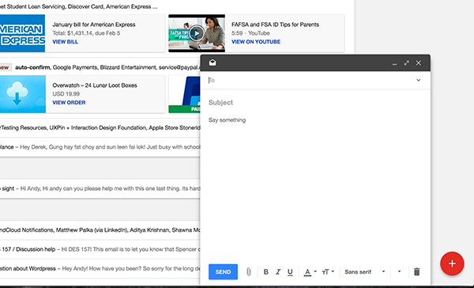
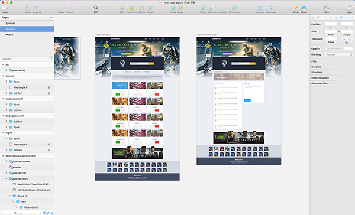

Learning IxD From Everyday Objects
January 31, 2017
Almost everyday I write an email through Google's Gmail or Inbox client. It's techincally a form, but it doesn't looks like a traditional form with input fields and labels. The form also sits nicely ontop of the page content, it doesn't need its own page. Even though it doesn't follow the traditional aesthetics of a form, the input fields are familiar because it resembles writing a letter. The form asks for the recipient's address (email address in the "To" field), subject of the letter ("Subject" field), and content of the letter ("Say something" field). The main buttons and actions are grouped at the bottom so it's easy to find. The blue "send" button reacts like a real button press; when you click on it the button looks like it's being pressed down.
Bill Derouchey's Article

Sketch App by Bohemian
January 11, 2017
Sketch is a design tool built by Bohemian. It's best used for creating user interface designs for web and mobile apps. Sketch has a beautiful and simple interface that lets users focus on creating professional designs without unnecessary tools taking up screen space.
Photoshop is a jack of all trades where users can edit photos, create graphics, and design interfaces. Illustrator focuses on vector graphics, icons, and also lets users create interfaces. Sketch is like the perfect child between Photoshop and Illustrator but was raised by an awesome uncle that taught Sketch how to get rid of its bad habits from Photoshop and Illustrator.
Sketch’s interface is familiar where it has the toolbars and attributes along the sides of the interface. It’s a smart move by not trying to reinvent the wheel but clean up and enhance the interface instead. The icons and buttons are all clear and easy to understand and the interactions are intuitive.